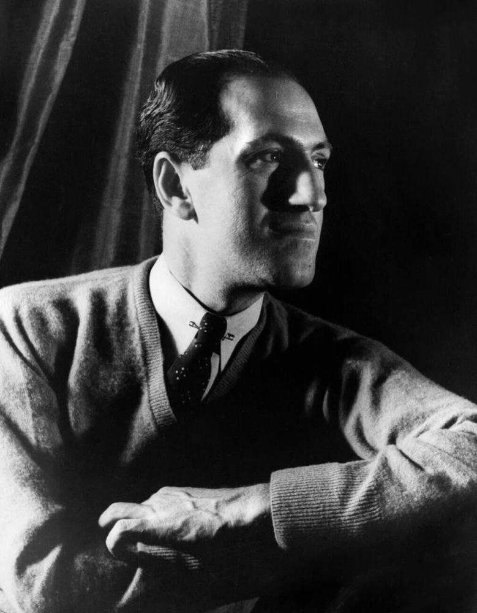
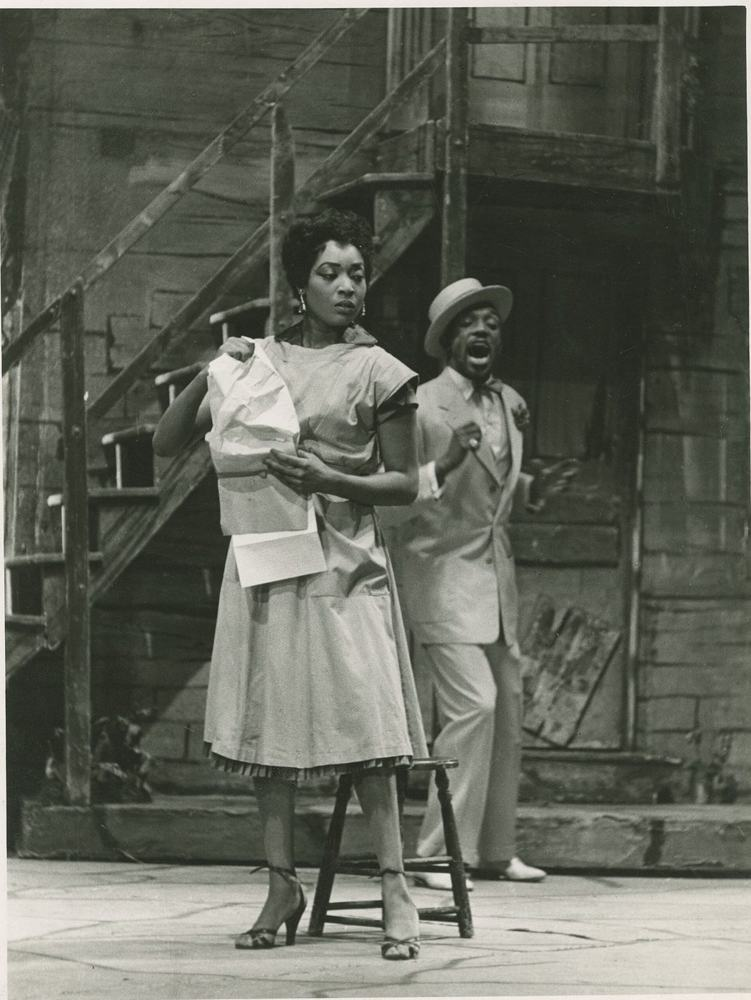

故事
被翻唱最多次的歌之一，原本是歌劇裡的搖籃曲。1935 年，George Gershwin 的歌劇 Porgy and Bess 首演。開場沒多久，一位母親抱著嬰兒，唱起了 Summertime。
這齣歌劇第一輪演出，並沒有賺到錢。隔年，Billie Holiday 把它錄成唱片，打進了排行榜。從此爵士樂手、藍調歌手、搖滾樂團，都開始唱它。

據統計，它的錄音版本超過兩萬五千個。它的旋律慢、空間大，每個人都能放進自己的東西。收藏起來，下次聽到 Summertime，想想它原本是唱給嬰兒聽的。
故事後面
Porgy and Bess 一九三五年首演時並不成功，第一輪演出虧錢，後來才慢慢成為經典。
Summertime 出現在開場，是一位母親唱給嬰兒的搖籃曲。旋律慢、和弦簡單，很適合讓每個人放進自己的詮釋。
從 Billie Holiday、Ella Fitzgerald、Miles Davis 到 Janis Joplin，各種風格的人都錄過，版本多到難以統計。

這樣聽
聽兩個人怎麼把同一段旋律唱成完全不同的味道。
逐句英文
One of the most covered songs ever began as a lullaby in an opera.
In 1935, George Gershwin's opera Porgy and Bess premiered.
Early in the opening, a mother cradling her baby sings Summertime.
The opera's first run lost money.
The next year Billie Holiday recorded it, and it made the charts.
From then on jazz players, blues singers and rock bands all took it up.
By some counts there are more than 25,000 recorded versions.
Its melody is slow and open, with room for everyone to add their own.
Save this. Next time you hear Summertime, remember it was first sung to a baby.
查證筆記與出處
錄音數量各方說法兩萬五千到三萬三千不等，取保守數字並寫據統計。Gemini 稿說 Billie 讓它「變成爵士版」太絕對，已改成「錄成唱片打進排行榜」。
https://en.wikipedia.org/wiki/Summertime_(George_Gershwin_song)
https://en.wikipedia.org/wiki/Porgy_and_Bess
https://www.34st.com/article/2017/10/25000-songs-later-summertime-through-the-ages
一分鐘影片版在 Instagram @jazz101tw。